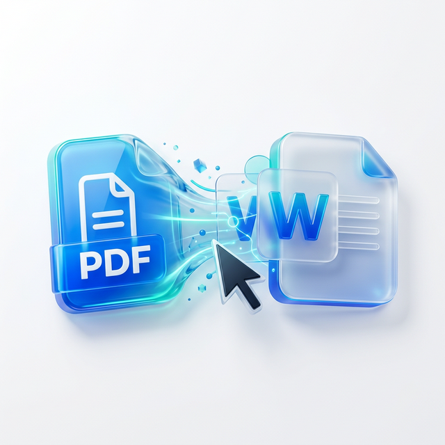

Free privacy first PDF summarizer for confidential business reports

Unlock Insights: The Free, Privacy-First PDF Summarizer Your Business Needs
In today's fast-paced business world, information overload is a constant challenge. Decision-makers, executives, and team members often drown in mountains of data. You face lengthy financial reports, detailed market analyses, complex legal contracts, and comprehensive project proposals daily. Reading every single page becomes impossible. Yet, missing critical details can lead to costly mistakes. The demand for a quick, efficient, and, most importantly, secure way to digest these documents has never been higher. This is where a free privacy first PDF summarizer for confidential business reports becomes indispensable. It offers a powerful solution without compromising your sensitive information.
Imagine cutting hours of reading time down to minutes. Picture getting the core insights from a 50-page report in a concise, accurate summary. This isn't just about saving time; it's about making better, faster decisions. It's about empowering your team with immediate access to crucial information. Most existing AI summarization tools, however, raise significant privacy concerns. They often store your data, use it for training their models, or lack transparent security protocols. For confidential business reports, this simply isn't an option. Our mission is to bridge this gap, providing powerful AI summarization that puts your privacy first.
The Critical Need for Privacy in Business Summaries
Your business reports contain highly sensitive data. Financial statements, strategic plans, client information, and proprietary research must remain confidential. Using a generic online tool that doesn't guarantee data privacy is a significant risk. Uploading such documents to an unknown server could expose your company to data breaches, competitive espionage, or compliance violations. Many free AI tools sacrifice security for convenience. They might log your uploads, analyze your content, or even use your private data to improve their algorithms. This practice is unacceptable for any organization handling sensitive information.
A true privacy-first PDF summarizer operates differently. It processes your documents securely, often locally or in highly isolated, encrypted environments. It ensures your data never gets stored, shared, or used for AI model training. This commitment to confidentiality is not a luxury; it's a fundamental requirement for modern businesses. You need peace of mind knowing your confidential business reports are safe. You want the benefits of AI-powered efficiency without the lingering threat of data exposure. Our tool is built on these principles, providing robust summarization technology with an unwavering focus on your security.
How Our Free Privacy-First Summarizer Works Wonders
Our free tool simplifies the summarization process while maintaining the highest privacy standards. You simply upload your PDF document. The AI then quickly analyzes the content, identifies key themes, arguments, and data points, and generates a concise summary. This summary captures the essence of the report, highlighting the most important information you need to know. The process is intuitive and user-friendly, designed for busy professionals. You don't need to be an AI expert or have technical knowledge to use it effectively. The results are delivered rapidly, allowing you to move quickly from understanding to action.
What sets our tool apart is its underlying security architecture. We employ advanced encryption and a strict no-data-retention policy. Your documents are processed in real-time and deleted immediately after summarization. We do not store any part of your confidential business reports on our servers. This ensures your intellectual property, financial data, and strategic insights remain entirely within your control. Our goal is to provide a powerful, efficient, and completely secure solution for processing your critical business documents. You gain valuable insights without ever compromising your company's data integrity.
Revolutionize Your Workflow: Key Benefits and Use Cases
Adopting a free privacy-first PDF summarizer for confidential business reports brings numerous tangible benefits to your organization:
- Unprecedented Time Savings: Quickly grasp the core content of any report, freeing up valuable time for strategic tasks and decision-making.
- Enhanced Decision-Making: Access summarized information rapidly, enabling quicker and more informed decisions.
- Improved Comprehension: Complex reports become easier to understand, with key points clearly extracted and presented.
- Consistent Accuracy: AI algorithms ensure summaries are objective and consistent, reducing human error and bias.
- Cost-Effective Solution: It's completely free, offering premium AI capabilities without any financial investment.
- Unwavering Data Security: Your confidential data remains protected throughout the entire process, guaranteed.
Consider the practical applications across various departments: In finance, quickly summarize quarterly reports or audit findings. Legal teams can extract vital clauses from lengthy contracts. Marketing professionals can distill insights from extensive market research studies. HR can get summaries of policy documents or employee feedback. When dealing with detailed legal documents and business contracts, a specialized AI can help you audit contracts and identify crucial clauses instantly, complementing your summarization efforts by providing a deeper, targeted analysis. This integration of AI tools dramatically boosts productivity and reduces the burden of manual information processing.
Beyond Summaries: Interacting with Your Confidential Data
While summarization provides a high-level overview, modern business needs often extend further. Sometimes, you need to delve deeper, ask specific questions, or extract particular details from your confidential reports. Imagine being able to chat with your PDF documents, asking questions and getting direct answers from the content, much like conversing with an expert. This interactive capability allows for a more dynamic engagement with your data. You can probe for specific figures, clarify ambiguities, or explore related concepts mentioned within the report. It transforms static documents into responsive knowledge bases.
This kind of advanced interaction, combined with robust privacy features, ensures that even your most sensitive inquiries remain secure. You can extract precise information without exposing the entire document to unnecessary scrutiny. For businesses handling intellectual property, client data, or proprietary research, this level of secure interaction is invaluable. It not only saves time but also enhances the depth of analysis possible, all while adhering to the strictest privacy protocols. Our commitment extends to developing a suite of tools that respect your confidentiality at every step of your document workflow.
The PDFjin Difference: Powerful, Free, and Private
At PDFjin, we believe that powerful AI tools should be accessible to everyone, without compromising privacy or incurring hefty costs. Our free privacy first PDF summarizer for confidential business reports embodies this philosophy. We understand the unique challenges businesses face in managing vast amounts of data securely. We dedicate ourselves to providing solutions that are not only efficient and accurate but also fundamentally safe. We don't just offer a tool; we offer a promise of security and performance. This means you can focus on what matters most: running your business effectively and making smart decisions, backed by reliable, private insights.
Embrace the future of document management with confidence. Stop wasting valuable time manually sifting through endless pages. Leverage the power of AI to gain instant understanding from your most critical reports. With PDFjin, you get enterprise-grade summarization capabilities, absolutely free, with your data's privacy as our top priority. Our platform is designed to empower professionals across all industries, from startups to large corporations, to work smarter, not harder.
Ready to Transform Your Document Workflow?
The solution to information overload and data privacy concerns is here. Stop risking your confidential business reports with generic tools. Start experiencing the efficiency and security of a truly private AI summarizer. It's free, it's powerful, and it respects your data's confidentiality. Are you ready to streamline your workflow and make quicker, more informed decisions?
Try PDFjin's free tools today! Discover how our privacy-first PDF summarizer and other innovative solutions can revolutionize the way you handle your business documents. Unlock immediate insights and ensure your sensitive information remains secure. Visit our website and experience the difference for yourself. Your data deserves the best protection, and your business deserves the best tools.